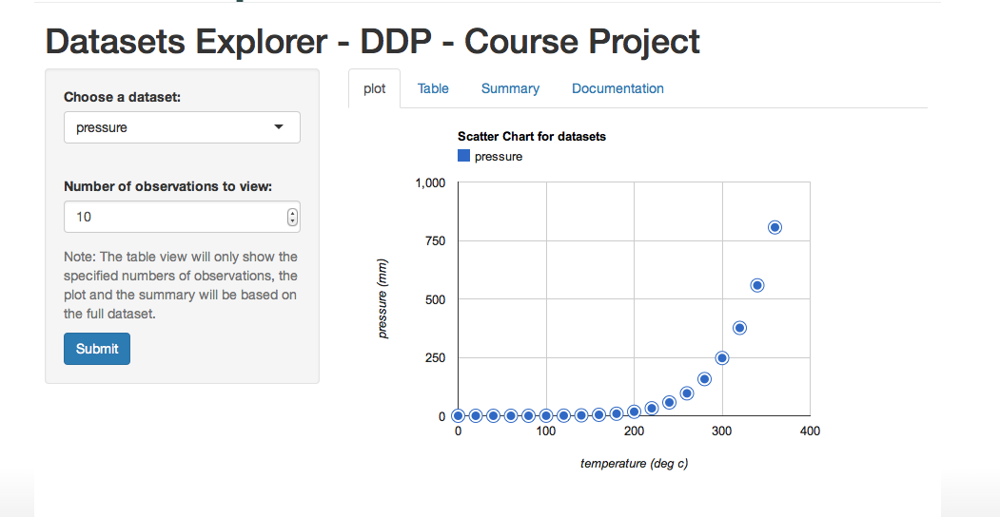
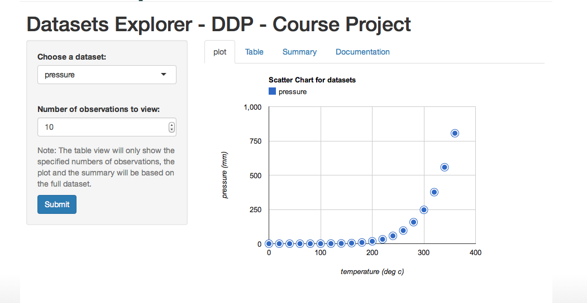

Datasets Explorer - Overview


This app allows users to choose a dataset from a pre-selected set of datasets and view a plot of that dataset. Users can also specify the number of observations to view from the chosen dataset.
The three datasets are:
Live demonstration of one of the charts used in the app.
--- .class #id
Access the Shiny App Course Project at: Datasets Explorer
Access the Shiny App Course Project at: Datasets Explorer